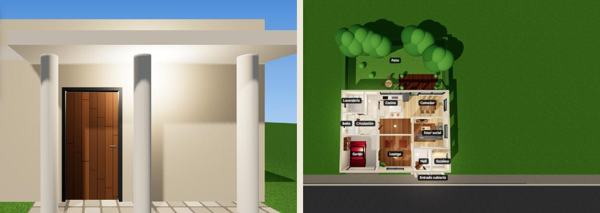

GRATIS · EN ESPAÑOL
GRATIS · EN ESPAÑOL
De la foto de un plano a una casa en 3D que puedes recorrer
Es el prompt de Claude Code con el que convertí la foto del plano de una casa en un sitio 3D: entras por la puerta, recorres cada cuarto y cambias la textura del sofá con un clic. Si trabajas en decoración, arquitectura o propiedades, dejas de entregarle a tu cliente un PDF sin vida.

Así queda: la casa del plano, con muebles, luz y sombras, lista para recorrerla en el navegador. Esta la armó Claude Code con este mismo prompt a partir de este plano.
🏠 Recorre la casa de ejemplo (abre en el computador) → 🚀 Los agentes de IA con los que hago cosas como esta les están sumando entre 5.000 y 10.000 dólares al mes a los clientes con los que trabajo. Están dentro de Imperio, para multiplicar las ventas de los negocios.Al final te cuento cómo funciona ↓- 💻 Se hace desde el computador (Windows o Mac), no desde el celular. Claude Code trabaja en una carpeta de tu equipo.
- ⏱️ Toma unos 15 minutos. Tú pegas el prompt y apruebas la lista de cuartos. Claude construye todo lo demás.
Ten tu cuenta de Claude con plan Pro
Claude Code viene con el plan Pro (unos 20 dólares al mes). El plan gratis no lo incluye. Si ya pagas Pro o Max, salta al paso 2.
Ver planes de Claude →Instala Claude Code
Escribe terminal en el buscador de tu computador y ábrela. Pega el comando de tu sistema y dale Enter. No muestra avance mientras descarga: espera a que termine.
WINDOWSirm https://claude.ai/install.ps1 | iex
curl -fsSL https://claude.ai/install.sh | bash
Cuando termine, cierra la terminal y vuelve a abrirla. Los comandos son los de la página oficial de instalación. ¿Prefieres sin terminal? La app de Claude para el computador trae Claude Code en la pestaña Code.
Escribe claude e inicia sesión
Crea una carpeta en Documentos llamada casa-3d y guarda ahí la foto del plano (sirve una foto del celular o una captura). Luego, en la terminal:
cd Documentos\casa-3d claude
cd ~/Documents/casa-3d claude
La primera vez te abre el navegador para entrar con tu cuenta de Claude. Entras, vuelves a la terminal y ya está Claude Code esperando tu mensaje. Si te pide permiso para crear archivos, acéptalo: así trabaja.
Copia el prompt
Este es el prompt completo. No necesita ninguna skill ni programa extra: Claude Code arma la casa con Three.js, que carga solo desde internet.
En esta carpeta hay una imagen con la foto del plano de una casa. Quiero que la conviertas en una experiencia 3D que se pueda recorrer en el navegador, como un sitio web, para mostrársela a un cliente. Hazlo así: 1. Mira la imagen del plano y entiende la distribución: cada ambiente (sala, comedor, cocina, baños, habitaciones, garaje, patio), sus medidas aproximadas, y dónde están las puertas, las ventanas y las aberturas entre ambientes. Antes de construir, escríbeme la lista de ambientes con sus medidas y espera mi confirmación. 2. Construye UN SOLO archivo llamado casa3d.html que abra con doble clic, sin instalar nada (usa Three.js desde un CDN). La casa en 3D debe respetar el plano al pie de la letra: paredes con grosor, puertas y ventanas en su sitio, piso distinto en cada ambiente, techo que se puede mostrar u ocultar, y muebles sencillos en cada ambiente según su uso (sofá y TV en la sala, mesa y sillas en el comedor, mesón y nevera en la cocina, cama en las habitaciones, carro en el garaje, pasto y árboles en el patio). Que se vea realista: luz suave, sombras, materiales con color y textura, nada de colores planos. 3. Navegación: un botón "Recorrido" que entra por la puerta principal y pasa por todos los ambientes con la cámara a la altura de una persona, sin atravesar paredes ni muebles; un modo libre con las flechas del teclado o WASD y el mouse para mirar; y un botón "Vista de plano" desde arriba. 4. Al pasar el mouse por un ambiente, muestra su nombre. Al hacer clic en el sofá, en cualquier mueble o en el piso, abre una paleta de colores y texturas para cambiarlos al instante. 5. Al terminar, abre el archivo en el navegador, revisa que cargue sin errores en la consola y que el recorrido no se meta dentro de ningún mueble. Luego explícame en 5 líneas cómo usarlo.
¿Estás en el celular y no te deja copiar? Abre esta página en tu navegador (Safari o Chrome) o descárgalo como archivo de texto.
Pégalo y aprueba la lista
Pega el prompt en Claude Code y dale Enter. Primero te muestra la lista de cuartos con sus medidas: si algo no cuadra con tu plano, corrígelo ahí mismo ("la cocina es más grande", "falta un baño"). Cuando digas que sí, construye la casa. En unos minutos te deja el archivo casa3d.html en la carpeta: doble clic y se abre en tu navegador.
¿Quieres algo distinto? Díselo en palabras: "pon el sofá frente a la ventana", "haz el recorrido más lento", "agrega una piscina". Claude cambia el archivo y lo vuelves a abrir.
Lo que te entrega
Preguntas frecuentes
¿Cuánto me cuesta?
El prompt es gratis. Claude Pro cuesta unos 20 dólares al mes. No hay que pagar nada más: Three.js es gratis y el archivo vive en tu computador.
¿Cómo se lo muestro a mi cliente?
Mándale el archivo casa3d.html por WhatsApp o correo: lo abre con doble clic en cualquier computador. Si quieres un link, dile a Claude Code: Publica casa3d.html en Cloudflare Pages y dame el link (es gratis).
No respetó mi plano
Pasa cuando la foto está torcida o con poca luz. Vuelve a tomarla de frente y escríbele: Vuelve a mirar el plano: el comedor está junto a la cocina y la puerta principal da al hall. Entre más claro le digas qué está mal, mejor lo corrige.
¿Funciona en ChatGPT?
Necesita Claude Code, porque es el que crea y prueba el archivo en tu computador. Un chat normal te da el código, pero no lo arma ni lo revisa por ti.
Deja de hacerlo todo a mano
Haz en 3 días el trabajo de todo un mes.
Ten un equipo de marketing de 4 personas trabajando para ti por unos $25 al mes: los agentes Imperio. Te hacen:
- ✍️ El contenido y los carruseles.
- 📣 Los anuncios y los VSL.
- 🖥️ Las páginas web.
- 📊 Las campañas en Meta.
- 💬 Y hasta responden tus mensajes.
Sin saber de tecnología: solo copias, pegas y facturas.
Son los mismos agentes que hoy les suman entre $5.000 y $10.000 dólares extra al mes a los negocios con los que trabajo, para multiplicar sus ventas.
Escríbeme “IMPERIO” por Instagram →Te cuento cómo funciona y si encaja con tu negocio.